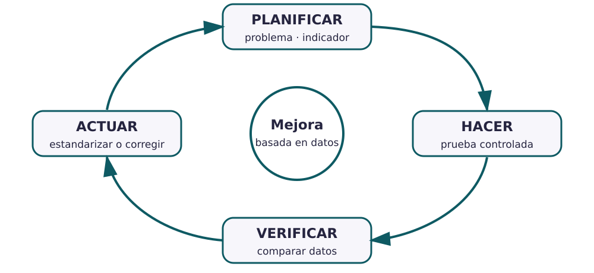

Contenido
Mejorar no es desear: es medir, actuar y volver a comprobar
«Mejorar la calidad» no es un plan. Falta decir qué problema existe, cómo se mide, qué resultado se espera y qué decisión se tomará después. El ciclo PDCA organiza esa lógica para que la mejora sea repetible y no una ocurrencia aislada.

| Fase | Pregunta | Evidencia |
|---|---|---|
| Planificar | ¿Qué problema, causa, indicador y objetivo? | Línea base y plan de acción |
| Hacer | ¿Cómo se prueba el cambio con alcance controlado? | Registro de la prueba |
| Verificar | ¿Qué muestran los datos frente al objetivo? | Comparación antes/después |
| Actuar | ¿Se estandariza, corrige o abandona el cambio? | Nueva regla o nuevo ciclo |
De una queja a un indicador
Queja: «algunas botellas pierden agua». Problema medible: «en la prueba de estanqueidad, 4 de cada 100 unidades presentan fuga». Indicador: porcentaje de unidades con fuga. Objetivo: reducirlo por debajo de un valor acordado sin introducir otro defecto. Acción piloto: revisar el montaje de la junta en un lote. Verificación: repetir la misma prueba y comparar.
Indicador, objetivo y acción no son lo mismo
- Indicador: la variable que observas.
- Objetivo: el resultado que quieres alcanzar.
- Acción: lo que cambias para intentar alcanzarlo.
- Escoged un problema real del ciclo de vuestro producto.
- Formulad una línea base, un indicador con unidad y un objetivo verificable.
- Proponed una acción pequeña que permita probar la hipótesis.
- Decid qué datos se recogerían y qué haríais en cada resultado posible.
- Representad las cuatro fases del ciclo y citad la fuente del problema cuando proceda.
Explica una decisión que aportaste al plan PDCA, una alternativa que se descartó y la razón técnica o documental. La entrada debe señalar dónde aparece la decisión en el dosier.
Lista desordenada
Ordena las decisiones de un ciclo de mejora. No basta con cambiar algo: hay que comprobar el resultado y decidir qué hacer después.
- Planificar: definir problema, línea base, indicador, objetivo y acción
- Hacer: probar la acción con un alcance controlado y registrar lo ocurrido
- Verificar: comparar los datos obtenidos con la línea base y el objetivo
- Actuar: estandarizar, corregir o iniciar un nuevo ciclo según el resultado